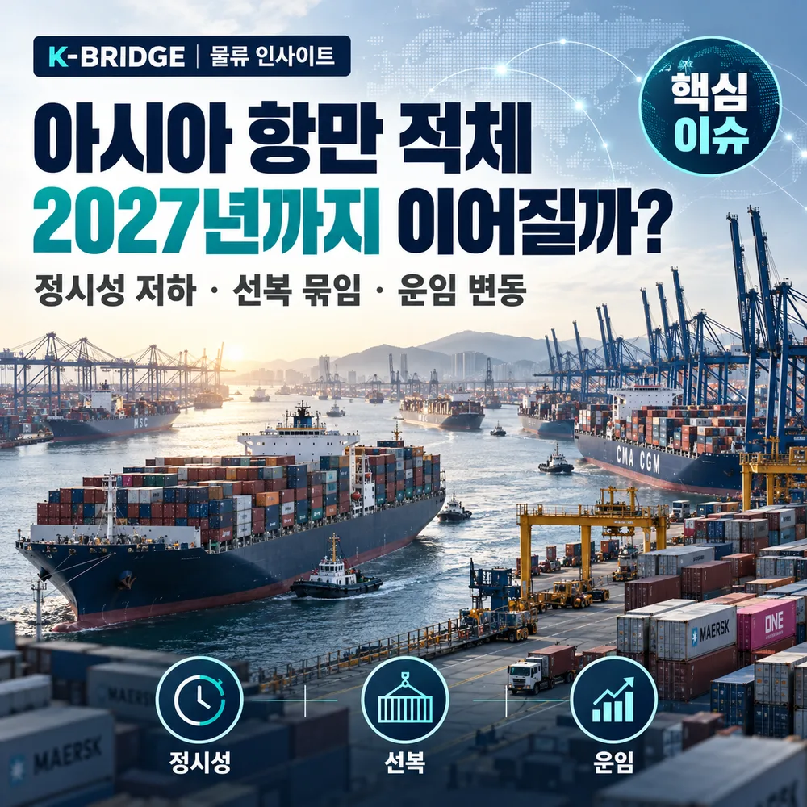
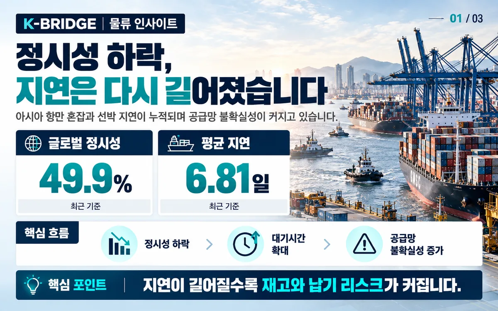
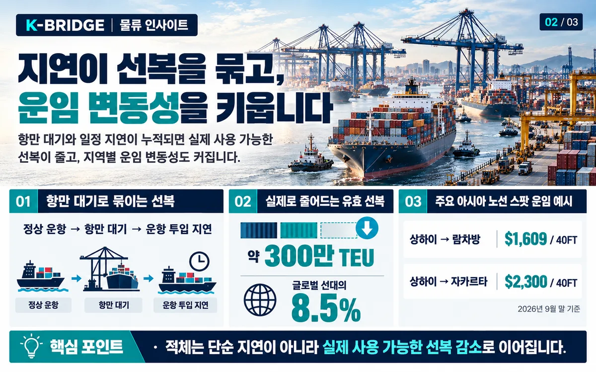
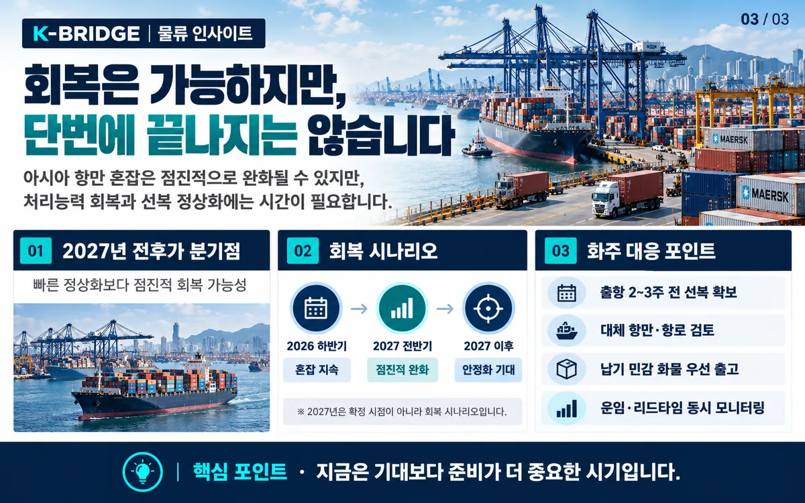

먼저 결론부터
2026년 9월 말 기준 아시아 항만 적체는 여전히 글로벌 선박 일정과 실제 가용 선복을 압박하고 있습니다. 8월 글로벌 정시성은 49.9%까지 떨어졌고, 지연에 묶인 선복은 약 300만TEU로 추산됩니다. 다만 “2027년까지 계속된다”는 말은 확정된 일정이 아니라 과거 혼잡 회복 속도를 적용한 시나리오입니다. 한국 화주는 춘절 전 성수기까지 일정 버퍼, 환적 리스크, Free Time과 ETA 변동을 함께 관리하는 것이 중요합니다.
1. 지금 아시아 항만 적체는 얼마나 심한가요?
가장 쉽게 볼 수 있는 지표는 선박 정시성입니다. Sea-Intelligence의 2026년 8월 데이터에 따르면 글로벌 컨테이너선 정시성은 49.9%까지 내려갔습니다. 7월 56.4%에서 한 달 만에 다시 5.9%포인트 하락했고, 늦게 도착한 선박의 평균 지연시간은 6.81일로 늘었습니다.

쉽게 말하면 전 세계 컨테이너선의 절반 이상이 예정된 시간보다 늦게 도착한 셈입니다. 특히 7월에는 아시아 14개 주요 항만의 정시성이 모두 악화됐고, 상하이는 21.0%, 닝보는 34.6%까지 떨어졌습니다. 앞선 항만에서 늦어진 선박은 다음 기항지에도 늦게 도착하기 때문에, 한 항만의 문제가 아시아 전체 일정으로 번지기 쉽습니다.
2. 태풍이 지나갔는데도 왜 적체가 쉽게 풀리지 않을까요?
이번 적체는 단순히 태풍 한 번 때문에 생긴 문제가 아닙니다. 기상 악화, 조기 성수기, 항만·내륙 인프라의 한계, 환적 네트워크 지연이 동시에 겹친 것이 핵심입니다.
- 반복된 태풍과 항만 중단 · 한 번 밀린 선박 대기열이 해소되기 전에 다시 항만 운영이 중단되면서 backlog가 누적됐습니다.
- 예년보다 이른 성수기 · 관세·재고 리스크에 대응한 조기 선적과 국경절 전 물량이 겹치며 아시아 출항지의 부담이 커졌습니다.
- 항만과 내륙 인프라의 구조적 한계 · Maersk도 물동량 증가가 항만·내륙 운송능력 증가 속도를 앞지르면서 병목이 고착되고 있다고 평가했습니다.
- 환적 허브로의 연쇄 전파 · 혼잡한 항만을 건너뛰면 화물이 다른 허브로 이동해, 싱가포르·동남아 등 주변 환적지의 부담이 오히려 커질 수 있습니다.
그래서 날씨가 좋아져도 바로 정상화되지 않습니다. 항만 밖에서 기다리던 선박이 한꺼번에 들어오면 vessel bunching이 발생하고, 야드·게이트·트럭·철도까지 순차적으로 밀리게 됩니다.
3. 배는 많아 보이는데 왜 실제 선복은 부족할까요?
항만 지연은 선박의 회전율을 떨어뜨립니다. 배가 없어지는 것은 아니지만, 접안을 기다리거나 이전 항차 지연으로 다음 출항에 제때 투입되지 못하면 시장에서 사용할 수 있는 선복은 줄어든 것과 같은 효과가 생깁니다.

Sea-Intelligence 분석을 인용한 업계 보도에 따르면 지연에 흡수된 선복은 8월 중순 약 170만TEU에서 9월 말 약 300만TEU로 75% 이상 증가했습니다. 규모로 보면 대형 글로벌 선사 한 곳의 선대와 맞먹는 수준입니다.
4. 항만 적체는 운임과 스케줄에 어떤 영향을 주나요?
적체가 심해지면 선사 입장에서는 같은 선박으로 처리할 수 있는 항차 수가 줄어듭니다. 여기에 성수기 수요와 blank sailing이 겹치면 특정 항로의 운임이 빠르게 움직일 수 있습니다.
| 지표 | 최신 값 | 실무 의미 |
|---|---|---|
| 글로벌 정시성 | 49.9% (8월) | 예정 도착보다 실제 ETA 변동 가능성이 커짐 |
| 지연선 평균 지연 | 6.81일 | 납기 버퍼를 평시보다 넓게 잡을 필요 |
| 지연 흡수 선복 | 약 300만TEU | 명목 선복보다 실제 예약 가능한 선복이 빠듯 |
| 상하이→람차방 | $1,609/40FT (+22%) | 9월 말 인트라아시아 운임 압력 확대 |
| 상하이→자카르타 | $2,300/40FT (+12%) | 동남아 항로도 혼잡·성수기 영향을 반영 |
Drewry는 9월 24일 기준 상하이의 평균 선박 대기시간을 83시간, 닝보를 38시간으로 제시했습니다. 동시에 상하이발 동남아 주요 항로의 스팟운임도 상승했습니다. 이 수치는 한국발 운임 그 자체는 아니지만, 아시아 권역의 유효 선복과 항만 운영 부담이 커지고 있다는 신호로 볼 수 있습니다.
반면 아시아–유럽 항로는 수요 둔화와 수에즈 복귀 영향으로 일부 운임이 내려가는 구간도 있습니다. 따라서 “적체가 심하면 모든 항로 운임이 무조건 오른다”고 단순화하기보다는, 항로별 수요·선복·우회운항·blank sailing을 함께 봐야 합니다.
5. 정말 2027년까지 이어질까요?
가능성은 있지만, 확정된 일정은 아닙니다. Sea-Intelligence는 팬데믹과 홍해 사태 초기의 회복 속도를 현재 혼잡에 적용한 시나리오에서, 최근의 낮은 혼잡 수준으로 돌아가기까지 약 6~10개월이 걸릴 수 있다고 분석했습니다. 2026년 9월 말에서 계산하면 2027년까지 일부 영향이 이어질 수 있다는 의미입니다.

특히 2027년 춘절 전에는 다시 선적 수요가 몰릴 수 있습니다. 적체가 완전히 해소되기 전에 다음 성수기가 시작되면, 선복 부족과 스케줄 변동이 다시 커질 가능성이 있습니다.
6. 한국 화주와 물류 담당자는 무엇을 준비해야 할까요?
- 출항 버퍼 확보 · 평소 리드타임만 믿지 말고 최근 실제 도착 지연을 반영해 예약 시점을 앞당깁니다.
- 환적항과 연결편 확인 · 직항이 아니면 환적 허브의 혼잡과 다음 선박 연결 가능성을 함께 봅니다.
- Free Time·D&D 조건 재확인 · ETA 변경으로 픽업 일정이 밀릴 때 추가 비용이 발생하지 않도록 조건을 보수적으로 잡습니다.
- 대체 항로·선사 확보 · 한 선사·한 스케줄에만 의존하지 말고 가능한 경우 복수 옵션을 비교합니다.
- ETA를 계속 업데이트 · 최초 B/L이나 Booking Confirmation의 ETA를 고정값으로 보지 말고 선박 위치·환적 현황을 계속 확인합니다.
- 2027 춘절 전 선적은 일찍 계획 · 적체가 일부 남아 있을 가능성을 전제로 재고·출하 계획을 평소보다 앞당겨 검토합니다.
KEY TAKEAWAYS
이 글에서 기억할 것
- 먼저 결론부터 2026년 9월 말 기준 아시아 항만 적체는 여전히 글로벌 선박 일정과 실제 가용 선복을 압박하고 있습니다.
- 8월 글로벌 정시성은 49.9%까지 떨어졌고, 지연에 묶인 선복은 약 300만TEU로 추산됩니다.
- 다만 “2027년까지 계속된다”는 말은 확정된 일정이 아니라 과거 혼잡 회복 속도를 적용한 시나리오입니다.
- 한국 화주는 춘절 전 성수기까지 일정 버퍼, 환적 리스크, Free Time과 ETA 변동을 함께 관리하는 것이 중요합니다.
7. 자주 묻는 질문
Q. 아시아 항만 적체가 정말 2027년까지 이어지나요?
Q. 선복이 늘었다는데 왜 예약은 여전히 어렵나요?
Q. 한국발 화물도 바로 영향을 받나요?
Q. 출항 계획은 얼마나 앞당겨야 하나요?
NEXT STEP
이 글과 함께 보면 좋은 자료
항만 적체 시기에는 운임보다 ‘도착 안정성’까지 비교하세요
케이브릿지는 출항지, 목적지, 환적항, 납기 조건을 기준으로 여러 선사의 스케줄과 운임을 함께 비교합니다. 아시아 항만 혼잡으로 일정이 불안정한 화물은 대체 항로와 리드타임 버퍼까지 포함해 검토해 보세요.
참고 자료
· Sea-Intelligence, Global Liner Performance / 아시아 항만 혼잡과 정시성 관련 분석, 2026년 8~9월
· Sea-Intelligence, Golden Week Capacity Distortions, 2026-09-23
· Drewry, Intra-Asia Container Index, 2026-09-24
· Freightos, Global Freight Outlook 및 9월 해상운임 업데이트, 2026년 9월
· A.P. Moller - Maersk, Q2 2026 Interim Report / port & inland congestion commentary
· Kuehne+Nagel / Lloyd’s List, port delays and absorbed containership capacity, 2026년 9월
※ 본 글은 2026년 9월 30일까지 공개된 자료를 기준으로 작성했습니다. 항만 혼잡과 선복·운임은 항차별로 빠르게 달라질 수 있으므로 실제 부킹 시점의 선사 공지와 터미널 상황을 다시 확인해야 합니다.